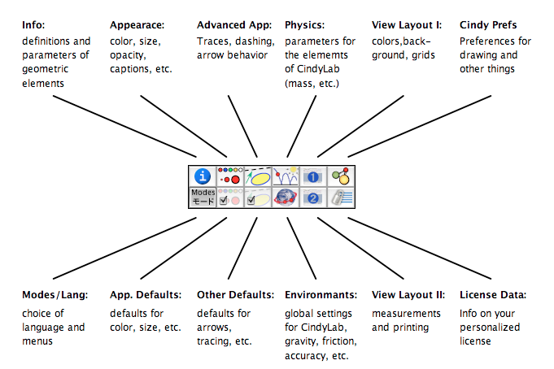
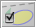

The Inspector
The inspector is the fundamental distributing center for all properties of geometric elements. It is one of the fundamental improvements in Cinderella.2, and it completely replaces the appearance editor in previous releases.
Understanding the functionality of the inspector will help you to control and personalize your Cinderella constructions. In this section we will give a general overview on the functionality of the inspector. Specific information on the functionality and inspection parameters of geometric and physical objects can be found in the descriptions of the objects themselves.
A General Overview
You can open the inspector by choosing the menu item Edit/Information. Depending on the selection of elements, a window sill pop up that either is almost empty or contains information on the selected elements. In any case, it will contain a button toolbar. With this toolbar you can switch between the different information blocks of the inspector.
 |
| The inspector buttons |
Each of these buttons represents a choice of properties that can be influenced by the inspector. Clicking one of these buttons switches to the corresponding information block. To provide a rough overview, the following graphic explains the type of parameters that can be inspected within the different blocks:
 |
| The information blocks |
Roughly speaking, the first row of buttons represents information on individual elements, while the second row represents Cinderella's default settings. The inspector always refers to all elements that are currently selected. Each element provides several attributes that can be viewed or changed by the inspector. All such attributes that belong to the currently chosen inspector block are shown. In what follows we will briefly demonstrate the possibilities of the inspector. We will organize the sections roughly by the inspector's information blocks:
-
 Geometric information: for definitions, labels, geometric parameters, etc.
Geometric information: for definitions, labels, geometric parameters, etc.
-
 Basic appearance: for color, size, visibility, labeling, circle filling, etc.
Basic appearance: for color, size, visibility, labeling, circle filling, etc.
-
 Advanced appearance: for traces and arrow properties
Advanced appearance: for traces and arrow properties
-
 Basic defaults: defaults for color, size, visibility, labeling, etc.
Basic defaults: defaults for color, size, visibility, labeling, etc.
-

Advanced defaults: defaults for traces, arrows, rendering, etc. -
 Views I: for view properties such as mesh, color and background images
Views I: for view properties such as mesh, color and background images
-
 Views II: for view properties units, precision etc.
Views II: for view properties units, precision etc.
-
 Preferences: for various global settings and various default parameters
Preferences: for various global settings and various default parameters
-
 Menu/language: for choice of menu and language
Menu/language: for choice of menu and language
-
 Physics: for the physical parameters of all CindyLab elements
Physics: for the physical parameters of all CindyLab elements
-
 Environment: environment for physics, accuracy, friction, many-body setup, actuation, etc.
Environment: environment for physics, accuracy, friction, many-body setup, actuation, etc.
-
 License: license information
License: license information
A more detailed description of the most important inspector facilities can be found in the following sections:
- Info Block
- Inspecting Appearance
- Traces and Arrows
- Physics and environment are discussed in CindyLab
- Controlling the Views
Page last modified on Wednesday 27 of July, 2011 [22:36:38 UTC].
The original document is available at
http://doc.cinderella.de/tiki-index.php?page=Inspector